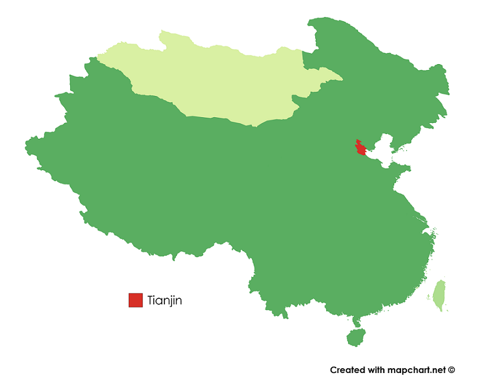

At Cuinese Cuisine App, we ensure you that only AUTHENTIC recipes that
represent the values of Chinese traditions can be featured.
Tian-Jin Style Eight-Treasure Tofu
天津八珍豆腐
Introduction
The Tian-jin style Eight-Treasure Tofu is a Northern Chinese dish that is composed of eight main ingredients such as shrimps, scallops and mushrooms.
Geography and Origin
Tianjin is close to the sea, so seafood is richer! Well, this delicious dish cooked with seafood and tofu came into being. Because of the rich ingredients, it is called "Bazhen Tofu".
A dish in which tofu is flavored by eight delicious ingredients. There is no set rule about which “eight treasures” you should use for the dish.Most recipes, though, fall somewhere in between, and typically include common seafood such as shrimp and squid, some meat (pork or chicken), mushrooms, and vegetables.

Ingredients
The main ingredients are
shrimp
Squid
Meat(pork or chicken)
Mushrooms
Vegetables
Ingredient details:
4 oz (110 g) shelled raw shrimp, fresh or frozen-thawed
1/8 teaspoon salt
1/2 teaspoon Shaoxing wine
1 tablespoon dried wood ear mushrooms, soaked in cold water for 30 minutes
8 oz (230 g) firm or extra-firm tofu, cut into 2 x 1 1/2 x 1/2-inch (5 x 3.8 x 1.3-cm) pieces
1 tablespoon plus 1 teaspoon vegetable oil, divided
1 garlic clove, thinly sliced
1 scallion, white part cut into 1-inch (2.5 cm) pieces, and green part thinly sliced
1 oz (30 g) green peas
1 oz (30 g) snow peas, cut diagonally into 1/2-inch (1.3 cm) pieces
2 oz (60 g) carrots, thinly sliced diagonally
1 tablespoon oyster sauce
2 oz (60 g) button mushrooms, cut into 1/2-inch (1.3 cm) pieces
1 oz (30 g) enoki mushrooms
1/2 cup water
1/2 teaspoon potato starch, mixed with 1 1/2 teaspoons water
1/2 oz (15 g) roasted peanuts
Salt and freshly ground white pepper
Cooking Methods
Here are the methods:
Cut the old tofu into square slices of 4 cm in size and 0.5 cm in thickness (approximately). If there is a lot of water, it is best to use a kitchen towel to absorb the water.
Heat a flat-bottomed non-stick pan, add a little more oil, and fry the tofu on a low fire until one side is golden, then turn it over and fry the other side, and serve.
Shell and cut spring bamboo shoots into sections, slice carrots, cut shiitake mushrooms into cubes, defrost quick-frozen green beans, soak black fungus in a hot pot with a little oil, stir fragrant ginger, stir fry with peanuts and carrots, then add mushrooms, fungus, fungus and spring bamboo shoots. When it is ripe, add the fried tofu and thawed green beans and stir fry.
Add a bowl of water to the pot, add salt, light soy sauce, rock sugar, white pepper to taste, continue to heat on a low fire, let the tofu soak up the soup, and then collect the juice on a high fire.
Tip:
It’s best to use a non-stick pan when frying tofu, otherwise it will get stuck.
We sincerely apologize as we could not find any English videos for this recipe.
We will work hard to get another video or work towards English subtitles in the future.
Where to find it in Southern California?
Tianjin Bristro on Google Map!
534 East Valley Boulevard,
San Gabriel, CA 91776